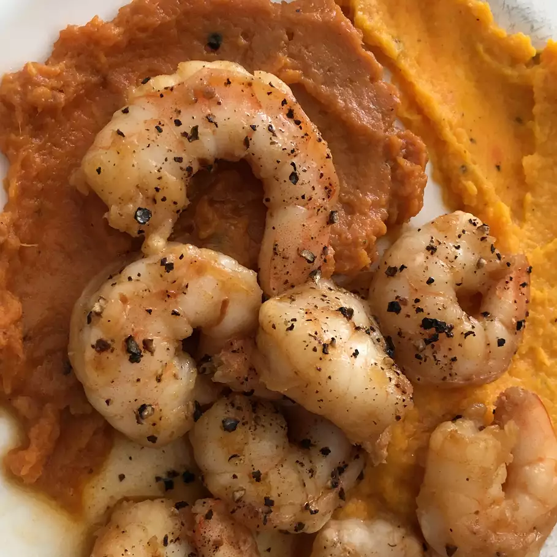

Home
Shrimp Scampi

A recipe to make a quick, garlicky, delicious shrimp
scampi
Ingredients
- 6 tablespoons unsalted butter, softened
- 1/4 cup olive oil
- 1 tablespoon minced garlic
- 1 tablespoon minced shallots
- 2 tablespoons minced fresh chives
- 1/2 teaspoon paprika
- 2 pounds large shrimp - peeled and deveined
- salt and pepper to taste
Steps
- Preheat grill for high heat
- In a large bowl, mix together softened butter, olive olive
garlic, shallots, chives, salt, pepper, and paprika. Add
the shrimp and toss to coat
- Lightly oil grill grate. Cook the shrimp as close
to the flame as possible for 2-3 minutes per side,
or until opaque.